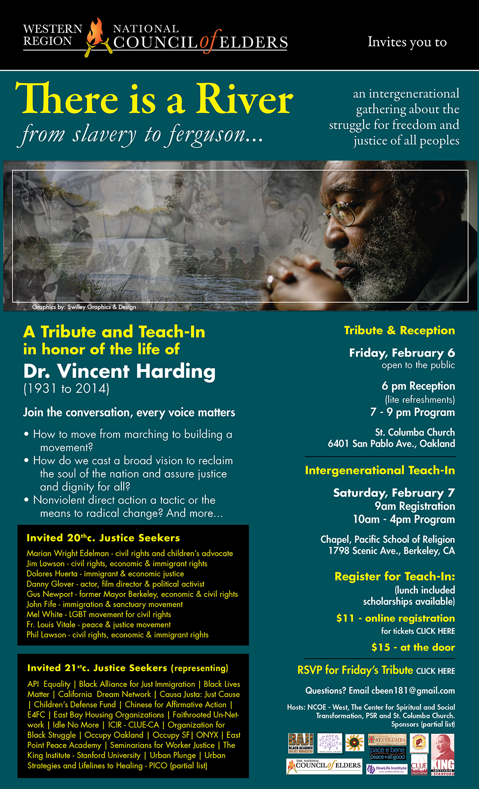

Friends,
FOR invites you to a tribute and teach-in to honor the life of Dr. Vincent Harding (1931-2014), sponsored by the Western Region National Council of Elders.

There Is a River from Ferguson to Slavery is an intergenerational gathering about the struggle for freedom and justice for all peoples.
On Friday, February 6th there will be a tribute and reception that is open to the public. The reception with light refreshments starts at 6 pm followed by a program from 7 to 9pm at St. Columba Church, 6401 San Pablo Avenue, Oakland, CA.
On Saturday, February 7th will be an intergenerational teach-in: Register in advance or at the door at 9 am.
The program will run from 10 am to 4 pm at the Chapel of the Pacific School of Religion, 1798 Scenic Avenue, Berkeley, CA.
Please join the conversation, every voice matters.
Topics will include:
- How to move from marching to building a movement?
- How do we cast a broad vision to reclaim the soul of the nation and assure justice and dignity for all?
- Nonviolent direct action a tactic or the means to radical change? and more
Invited 20th century Justice Seekers are Marian Wright Edelman, Rev. Jim Lawson, Danny Glover, Mel White, Phil Lawson, Gus Newport, John Fife, Fr. Louis Vitale, and more.
Invited 21st century Justice Seekers (representing) API Equality, Black Lives Matter, Occupy Oakland, California Dream Network, Occupy SF, Organization for Black Struggle, The King Institute-Stanford University, Urban Plunge, PICO and many others.
FOR is honored to be among the supporting sponsors of the tribute to Dr. Harding. One of the recipients of our 2013 Martin Luther King, Jr. Peace Award, Vincent Harding knew that education is the key to a vibrant and healthy democracy, and that a healthy and vibrant democracy with an educated populace is the key to a just society.
A teach-in is a fitting tribute to this elder who was both mystic and scholar, always pointing to the transcendent dimension of a just cause, even through suffering, and finding a teachable moment that furthered the way of peace and the way of love.
Dr. Harding's commitment to actively mentor the next generation is honored in the way that this event has been constructed with young leaders’ voices being in the forefront of the dialogue.
"We are not alone in this struggle for the re-creation of our own lives and the life of our community. It has long been written and known that those who choose to struggle for the life of the earth and its beings are part of an ageless, pulsating membrane of light that is filled with the lives, hopes, and beatific visions of all who have fought on, held on, loved well, and gone on before us. For this task is too magnificent to be carried by us alone, in our house, in our meeting, in our organization, in our generation, in our lifetime... we are all a part of one another, and we are all part of the intention of the great creator spirit to continue being light and life." ~ Dr. Vincent Harding
Please join us at this event in remembrance and celebration of light and life.
I'll be there and will look forward to seeing you too.
In peace & gratitude for your support in the struggle,
Rev. Kristin Stoneking |